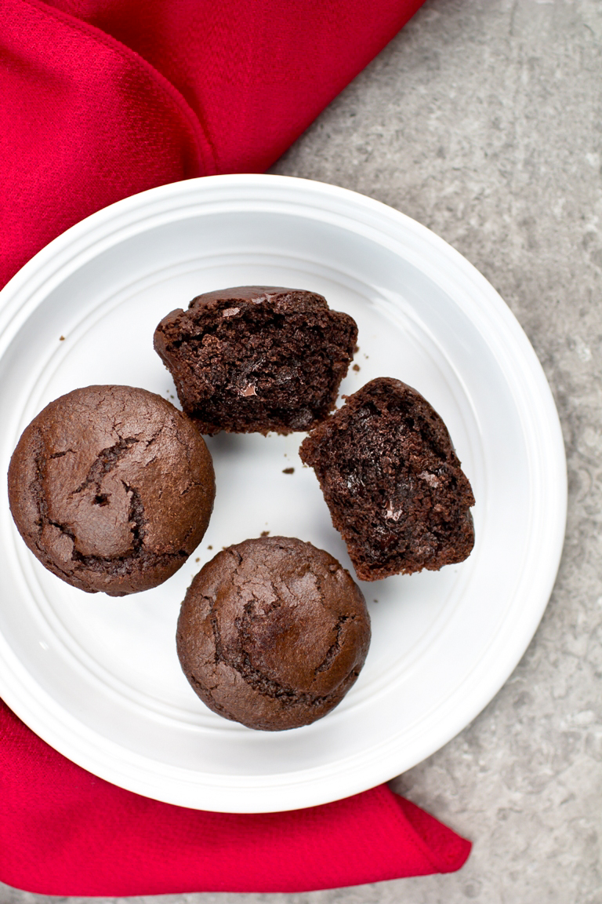

Home
Healthy Vegan Chocolate Muffins (Oil-free)
If you love decadent chocolate treats, these are for you!
These Vegan Whole Wheat Chocolate Muffins are no joke.
They are made with whole
wheat and have no oil in them, so they are more on the
healthy side than ones made with
refined sugar and oil.

Ingredients
- 1 1/4 cups (160g) whole wheat pastry flour or all-purpose flour
- 1/2 cup (48g) unsweetened cocoa powder
- 1 teaspoon baking soda
- 1/2 teaspoon fine sea salt
- 3/4 cup (180g) dairy-free semi-sweet chocolate chips
- 3/4 cup (180g) full-fat coconut milk
- 3/4 cup (240g) pure maple syrup
- 1/2 cup (120g) unsweetened applesauce
- 1 1/2 teaspoon (8g) vanilla extract
Instructions
- Preheat an oven to 350°F (177°C and line a muffin pan with 12 nonstick liners
- Add the wheat flour, cocoa powder, baking soda and salt to a large bowl and whisk very well. Add the milk, applesauce, vanilla and chocolate chips and stir until the batter is smooth.
- Bake for 22-25 minutes. They are done when they have puffed up and a toothpick comes out basically clean. Don't be confused between wet batter and the melted chocolate chips though.
- Let them cool for 15 minutes, as they will finish cooking and be too tender to eat right away. Cool completely on a wire rack. Once cooled, drizzle chocolate sauce on top if feeling super indulgent.
Recipe credit thevegan8.com